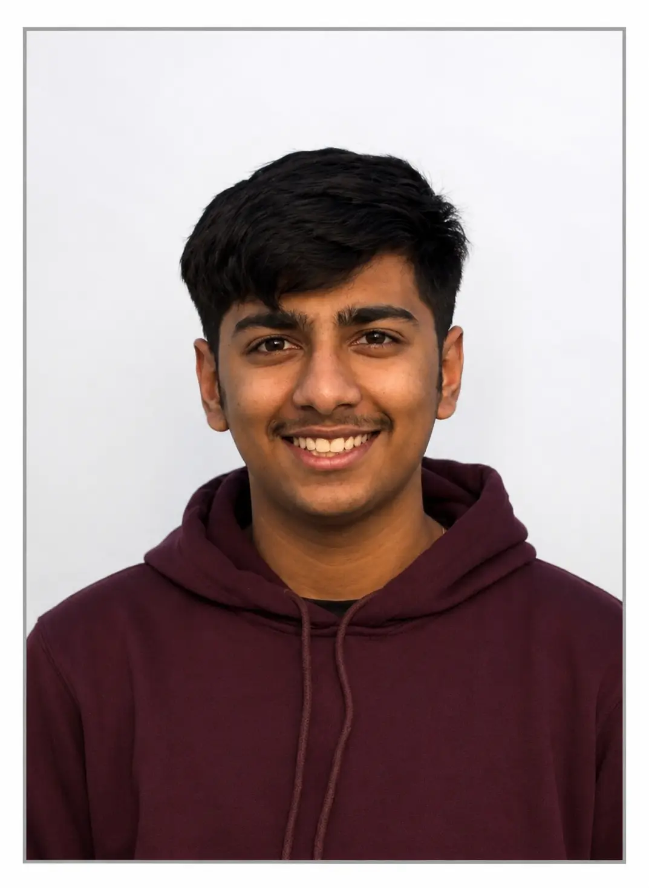

Charting a course
ENTERINGKetan Puri's World
LOCATING
0%
Charting a course
Full-Stack Developer & UI/UX — AI & Software Developer building intelligent applications using Java, Python, C, React, Node.js, AI, and modern web technologies to solve real-world problems.
